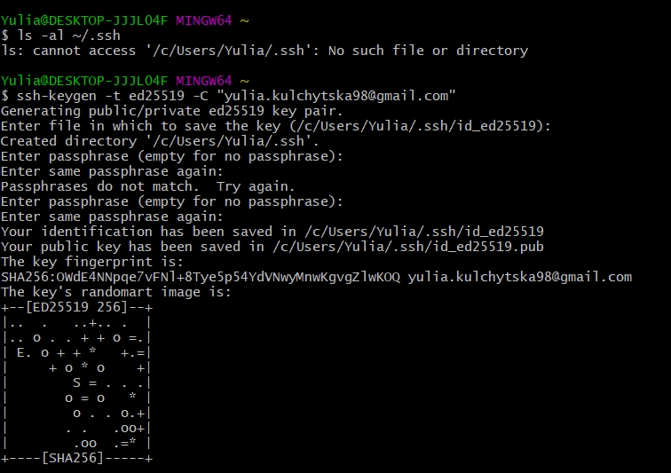
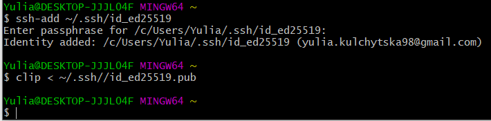

Команди GIT
- git config --global user.name blabla-введення імені користувача
- git config --global user.email blabal@bla-введення електронної адреси користувача
- git init-створення репозиторію
- git status-перевірка наявності файлів, які є, які потрібно закомітити
- git add-додавання файлів в індекс
- git commit-для збереження змін у існуючому файлі
- git log-перераховує коміти,які були зроблені в репозиторії
- git checkout-переключення між гілками
- git branch-створення та відображення гілки
- git push-відправляємо в репозиторій зміни проекту
- git pull-отримання змін з репозиторію
- git merge-об'єднює активні гілки
- git clone-клонування репозиторію
.gitignore файл?
не відслідковує зміни у файлах, тобто ігнорує їх
Advanced
- git revert-створення нового комміту з відміною останнього комміту
- git reset-відміна індекса і робочого каталогу до останнього стану комміта
- git rebase-застосування коммітів в іншій гілці
- git cherry-pick-повторне застосування змін, які були в одному комміті,у вигляді нового комміту на поточній гілці
- git stash-тимчасове збереження змін, не попадають зразу в комміт
Підключення GITHUB через SSH

